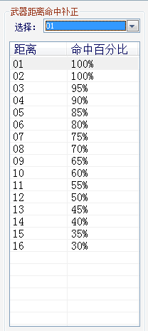
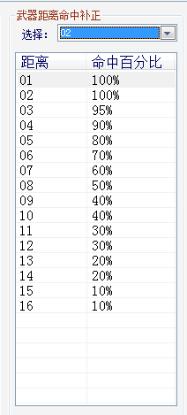

武器需要关注 4 个方面：射程、火力、适应性、命中。（修理装置另述。）
射程：关系到机体的攻击范围。近战武器射程为 1，攻击范围为自身周围的 4 个格；远程武器射程为 N(N>1)，攻击范围为距自身
2~N 格所包含的范围。
火力：状态栏显示的火力为武器基础火力加强度的总和（原版计算方式）。
适应性：适应性没有直接的显示，但可以通过火力表现出来，具体表现为武器对不同地形的火力不同。若武器对某地形没有火力，即使敌对单位在武器射程范围内也无法攻击。武器地形适应性对于机体类型和地形而言存在以下关系--当被攻击方机体类型为空时，受到的伤害为攻击方适应空的武器火力值；当被攻击方机体类型为海、陆时，如果处于的地形为陆，受到的伤害为攻击方适应陆的武器火力值；当被攻击方机体类型为海、陆时，如果处于的地形为海，受到的伤害为攻击方适应海的武器火力值；
命中：机体攻击时的命中率主要由速度、武器基础命中以及地形、距离等方面的补正决定。具体关系如下：
最终命中=基础命中×地形补正×距离补正（被攻击方为空类型时，不考虑地形补正；部分武器，比如浮游炮类武器【原版设定，也可以不遵循】命中不考虑距离补正。）
基础命中=攻击方速度+攻击方武器命中-被攻击方速度
特殊情况：1）使用干扰时，敌方命中在上述最终命中基础上减半；2）机体特殊技能干扰电波发动时，对方命中在上述最终命中基础上降低
30%。
地形相关补正系数请参考游戏说明-游戏简介-参数说明-隐参-地形影响
武器距离命中补正请参考以下表格

